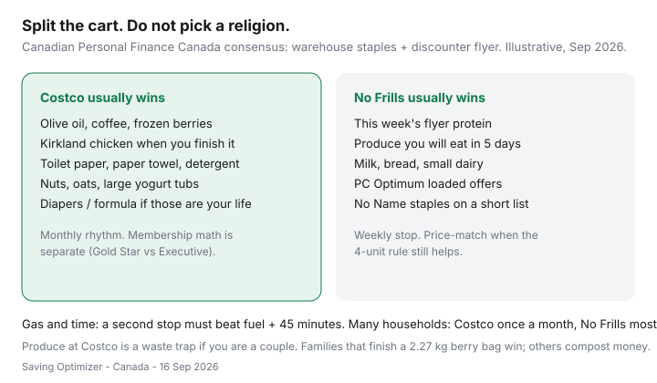

Food & Groceries · Canada
Costco vs No Frills: how to split your cart so you actually save
All-or-nothing loyalty is how Canadians overpay. Costco-only households drag home a 2.27 kg clamshell of greens and a $20 impulse bakery box. No Frills-only households pay retail for olive oil and never touch a Kirkland chicken they would actually finish. The r/PersonalFinanceCanada consensus is boring and correct: split the cart.
This is a two-rhythm shop: warehouse staples on a monthly calendar, flyer and points on a weekly discounter — usually No Frills if that is your Loblaw banner. If your cheap store is FreshCo or Food Basics, steal the framework and swap the logo. Membership math stays in the Gold Star vs Executive guide.
Disclosure: Costco memberships, PC Financial cards, and grocery gift cards are offer types. Saving Optimizer may earn a commission if we later add partner links. We do not currently claim Costco, Loblaw, or issuer partnerships. Run your unit prices; warehouse locations and flyers differ.
Key takeaways
- Costco tends to win on oils, coffee, frozen fruit, paper, detergent, and proteins you will freeze in portions.
- No Frills tends to win on this week’s flyer meat, short-life produce, milk, and loaded PC Optimum offers.
- Produce quality at Costco is fine; produce volume is the waste tax for couples.
- Monthly warehouse + weekly discounter beats a three-stop Saturday for most households.
- Gas, parking, and 45 minutes are costs. Executive 2% does not apply to gas anyway.
Categories Costco usually wins on unit price
Canadian comparison posts (PFC threads, city basket write-ups, warehouse vs discounter receipts) keep rhyming. Costco’s unit-price wins cluster where the pack size matches a month, not a Tuesday:
- Olive oil, canola, and other cooking fats you will finish
- Coffee beans or large tins
- Frozen berries and vegetables (the freezer is storage, not a grave)
- Oats, nuts, rice in bags you have room for
- Toilet paper, paper towel, laundry detergent
- Kirkland chicken or salmon when you portion and freeze the same day
- Diapers and formula if those are currently your life
Worked example (labelled): $18/L olive oil at a full-service store versus a Kirkland tin that lands closer to $10–$12/L equivalent — the gap pays for a lot of bananas at No Frills. Recheck the shelf sticker; this is a pattern, not a 2026 Statistics Canada series.
Categories flyer+points at No Frills usually win
No Frills (and Maxi in Quebec) is a flyer-and-PC machine. It usually wins on:
- This week’s featured chicken, pork, or ground meat at a true loss-leader price
- Produce you will eat in five days (bananas, cabbage, onions, bagged carrots)
- Milk, bread, and small dairy you do not want in warehouse volumes
- No Name pantry items on a short list
- PC Optimum offers you actually loaded
City snapshots in September 2026 (for example public No Frills vs Metro/Loblaws basket posts) often showed discounters several dollars cheaper on eggs, bread, and cereal even when a full-service banner had a hero chicken price. Your list is the only legal comparison. Build dinners from the flyer with sales-first meal planning.

Produce quality vs waste trade-offs
Costco produce can be excellent and still be a bad buy. A clamshell of berries that dies on day four is not cheaper per gram; it is compost. Couples should default produce to the discounter and use Costco for frozen fruit. Families that pack five lunches can beat the waste curve — that version is in family grocery budgeting.
Watch water weight and “organic theatre.” Compare unit prices on the same variety. If the warehouse apple is cheaper but you throw out a third, the discounter bag won.
Building a two-stop monthly rhythm
- Pick a Costco Saturday once a month. List only replenishment SKUs from last month’s empty bins — oil, coffee, paper, frozen fruit, protein to freeze.
- Shop No Frills most other weeks from a Thursday flyer list. Five dinners, one flex night.
- Do not add Superstore “because we’re out.” That is a third banner tax. If you need milk mid-week, the discounter or a corner store litre is still cheaper than a bored warehouse trip.
- Revisit after a household change. A kid leaving home should shrink the Costco list, not your pride.
If No Frills is not closest, the same split works with FreshCo (Scene+) or Food Basics (Moi offers). The banner rotation is the city-level map.
PC Optimum on the No Frills leg
Load offers before you leave. Costco will not help you. A typical unboosted PC week is still a ~0.5–1.5% band; a PC Financial Mastercard can lift Loblaw banners toward ~3% if you pay in full — see grocery cards. Do not shop a more expensive Loblaws for points while Costco oil sits at home.
Price-match at No Frills when the screenshot is clean and the four-unit rule still helps. Walmart will not match competitor ads; do not build the split around a fantasy till.
Sample split lists for couples and families
| Couple (2 adults) | Family (2 adults + kids) | |
|---|---|---|
| Costco monthly | Oil, coffee, frozen berries, TP, oats, nuts | Those plus chicken to freeze, yogurt tubs, snacks you actually pack |
| Costco skip | Salad greens, bakery impulse, giant muffins | Same, unless lunches will finish them in 48 hours |
| No Frills weekly | Flyer protein, produce, milk, eggs, bread | Same, plus lunch fruit and a treat cap of one |
| Points | PC Optimum on the discounter trip | Same; Shoppers redemption is a separate errand |
Gas and time cost thresholds
Costco gas can be cheap and still be a detour. Executive 2% does not include gas. The CIBC Costco Mastercard often pays a higher gas rate — that is card math, not grocery math.
Rule of thumb (labelled): value your driving hour. If a round trip is 50 minutes and $6 of fuel to save $4 on yogurt, stay in the No Frills parking lot. If the monthly warehouse list is $220 of goods that are $40 cheaper than discounter unit prices, the trip is doing a job. Track two months of receipts before you call yourself a “Costco household.”
Acceptance: Costco warehouses are Mastercard-only. Amex grocery cards go to sleep at the door. Plan the plastic in maximum grocery rewards.
Sources & date stamps
- Costco Canada membership and Executive reward terms (reviewed 16 Sep 2026) — gas and food court excluded from 2%.
- Saving Optimizer Costco math: Executive break-even ~$3,250 eligible spend; PC Optimum offer ranges.
- Public Canadian basket snapshots and Personal Finance Canada threads on warehouse vs discounter splits (directional, not a census).
- Statistics Canada Daily, 14 Sep 2026: grocery CPI context for why unit price still matters (+2.8% food from stores year over year in August 2026).
Frequently asked questions
Is Costco cheaper than No Frills in Canada?
On some unit prices, yes — olive oil, coffee, frozen berries, paper, and chicken you will finish. On this week’s flyer protein, milk, and produce you will eat in five days, No Frills often wins. All-or-nothing shopping is the expensive choice.
How often should I go to Costco?
For most households, monthly. Weekly Costco is how couples waste produce and buy snacks in warehouse sizes. Pair it with a weekly discounter run.
Does PC Optimum work at Costco?
No. Costco is its own membership and card world. Load PC Optimum for the No Frills (or Superstore/Maxi) leg. Executive 2% and the CIBC Costco Mastercard are the warehouse overlays.
When is a second stop not worth it?
When fuel, parking, and 45 minutes exceed the documented gap. A $6 flyer win that costs $8 in gas is a hobby. One well-timed monthly warehouse trip plus a neighbourhood No Frills is the usual math.
Should couples skip Costco produce?
Usually yes, unless you freeze or cook it immediately. Family packs of berries and salad greens are sized for households that finish them. Waste erases unit-price wins.